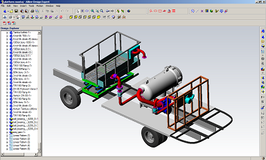
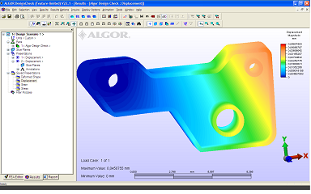
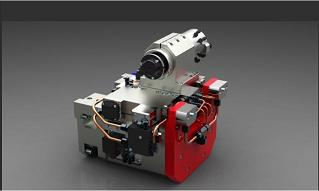
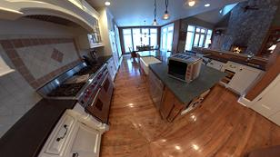

|
Çizim masalarý yüzlerce yýl, yapýlan tüm mühendislik ve de tasarým çizimlerine ev sahipliði yaptý. Fakat 1960'lý yýllarýn sonlarýna doðru, bilgisayar yazýlýmlarý sadece bu çizimlerin saklanmasýna olanak veren bir arþiv olmaktan çýkýp, sýnýrsýz bir hayal gücü içerisinde "ne istiyorsan çiz" felsefesine izin verdi. Önceleri 2D üzerinden ilerleyen bu felsefenin yerini, teknoloji ve üretim çaðýný yaþadýðýmýz bu dönemde 3D Modelleme Programlarý alýyor.
3D Modelleme yazýlýmlarý her þeyden önce, 2D programlarýna karþý gösterdiði üstün görsellik ile, ürün tasarýmýnýza 100% hakim olmanýzý saðlar. 2D ile yaptýðýnýz çizimlerin, kafanýzda 3 boyutlu olarak canlanmasý zordur. Hatta bunun için ürünün tam olarak üretilmesi bile gerekebilir. Bu pek çok zaman dezavantajlar getirir. 3D modelleme içerisinde, daha bilgisayar ortamýndan çýkmamýþ ürünün katý model halini görebilir, 2D ile kolaylýkla gözden kaçacak hatalarý anýnda tespit edebilirsiniz. Böylelikle, üretim aþamasýnda karþýlaþýlabilecek pek çok sorunu anýnda önlersiniz.
2D Modelleme ile, üretime göndereceðiniz ürünün tüm bakýþ açýlarýný ayrý ayrý çizmek zorunda kalýrsýnýz. Ayrýca, bir yerde yapacaðýnýz ufak bir deðiþiklik, tüm bu çizimlerin de deðiþmesine ve dolayýsýyla büyük zaman kaybýna yol açar. 3D ile bu tarz þeylere hiç gerek kalmaz. 3D içerisinde ürününüzü , yüksek görsellik ve de doðruluk içerinde modellersiniz. Daha sonrasýnda gereken bir deðiþiklikte, tüm ürün üzerinde oynamanýz gerekmeden sadece ilgili yerin özelliklerini deðiþtirirsiniz.
2D Modelleme devamlý sizi dikkatli olmaya zorlar. Kesitler çizerken veya bu çizimlere ölçüler atarken devamlý konsantre olmak durumdasýnýzdýr. Üretim aþamasýnda herhangi bir hata olmamasý için 2D çizim aþamasýnda yüksek bir efor harcarsýnýz. 3D Modelleme ile her þeyi düþünmenize gerek yoktur. Mükemmele yakýn bir uyum içerisinde oluþturduðunuz üretim modelinizin, sadece bir iki tuþla istediðiniz yerden 2D teknik çizimlerini alabilirsiniz. Bu teknik çizimleri alýrken hiçbir detayý kaçýrmazsýnýz. Çünkü program sizin yerinize tüm detaylarý zaten düþünür.
2D Modelleme size, program üzerinde ürün montajý yapmanýza ve de ürünü bir bütün halinde görmenize olanak vermez. Sadece size hoþnutsuz ve karýþýk görüntüler sunar. 3D Modelleme ise, ileri montaj özelliði saðlamasýnýn yaný sýra, montajda kullanýlacak yüzlerce parçayý ayrý ayrý sýnýflayarak, yapýlacak üretime tüm detaylarýyla hakim olmanýzý kolaylaþtýrýr. Böylelikle hem kullanýlacak tüm materyaller hakkýnda kesin bilgiye sahip olur, hem de montajda birbirine uyumlu olmayan parçalarý anýnda tespit edersiniz.
Ayný zamanda, 2D ile yapýlamayacak ama 3D içerinde kolaylýkla gerçekleþtirilecek bir diðer özellik ise render ile gerçeðe yakýn görüntüler almadýr. 3 Boyutlu modellediðiniz bir ürüne üzerinde istediðiniz gibi renk gölge ýþýk ve materyal atamalarý yapabilir, arka plana yerleþtireceðiniz gerçekçi görüntüler ile daha üretime bile geçmemiþ ürününüzü istediðiniz ortam ve þekle rahatlýkla sokabilirsiniz.
3D Modelleme 2D modellemenin aksine size, rahatlýkla kütlesel ve hacimsel hesaplamalar yapmanýza da imkan verir. Ayný zamanda gerçeðe en yakýn prototiplemeyi 3D yardýmý ile yapabilirsiniz. Böylelikle, üretimde herhangi bir sürprizle karþýlaþmaz, tahmin ettiðiniz ebatlarda ve maliyette bir ürüne sahip olursunuz.
Kýsacasý biz þunun farkýndayýz ki, eski çaðlardan bu yana devam eden, günümüze rapido kalemler ve daha sonrasýnda 2D çizimler ile gelen insanoðlunun ürün tasarlama ve üretme arzusunda, þimdi sýrayý 3D modelleme alýyor. Ýleride tüm iþletmelerin 3D modellemeye geçecekleri muhakkaktýr. Bu iþlemi þu anda gerçekleþtirmiþ binlerce þirket, piyasadaki paylarýný katlayarak arttýrmýþ ve de müþteri memnuniyetini en üst düzeye çýkarmýþtýr. Bu þirketlerin ayaklarý yere daha emin basmakta, tasarýmlardaki kaliteleriyle herhangi bir gelecek korkusu yaþamamaktadýr. Siz de biran evvel bu geçiþi saðlayarak piyasada daha çok üstünlük saðlayabilir, hak ettiðiniz konuma gelebilirsiniz.
Unutmayýnýz ki geleceðe ve kaliteye yapýlan hiç bir yatýrým boþa deðildir.
Þundan eminiz ki bir gün herkes ürünlerini 3 Boyutlu olarak tasarlayacak.
Bunu neden daha erkene almayalým ki?.. |